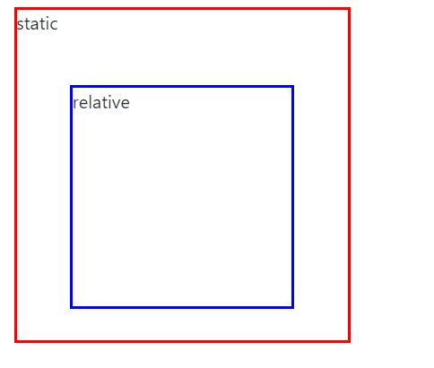

不断总结工作和学习过程中遇到的有关css问题。
1.position
position属性用于指定一个元素在文档中的定位方式，其关键字有五个，static、relative、absolute、sticky、fixed。
static：无特殊定位，对象遵循正常文档流。top、right、bottom、left等属性不会被应用。
<!DOCTYPE html>
<style>
#first {
position: static;
border: 2px solid red;
height: 100px;
width: 100px;
top: 500px;
left: 500px;
}
#second {
position: relative;
border: 2px solid blue;
height: 100px;
width: 100px;
left: 100px;
}
</style>
<body>
<div id="first">static</div>
<div id="second">relative</div>
</body>
</html>
relative：对象遵循正常文档流，设置top、right、bottom、left属性会使其偏离正常位置。其他元素的位置则不会受该元素的影响发生位置改变来弥补它偏离后剩下的空隙。并且margin、padding属性依然生效。
1 |
|
absolute：绝对定位元素脱离了文档流，在布置文档流中其他元素时，绝对定位元素不占据空间。absolute定位的元素脱离文档流后，只能相对于最近的“position”祖先元素定位。如果绝对定位的元素没有“positioned”的祖先元素，那么他是相对于文档的<html>标签定位，（relative和static方式在最外层是以为定位原点，<html>和<body>元素相差9px左右）。一个“positioned”元素是指position值不是static的元素。
absolute定位top:0;left:0两个属性是必要的，如果使用了fixed和relative定位的话，不在absolute上设置top/left/bottom/right的话，则使用默认值auto，这样便遵从了正常的html文档流，会占用文档空间。如果同时设置了top/left/bottom/right四个属性，则遵循以下规则：
·如果top和bottom同时存在，那么只有top生效
·如果left和right一同存在，只有left生效。
1 |
|
fixed固定定位和absolute一样都脱离了文档流，即便页面滚动，他还是会停留在相同位置。和ralative一样top/left/bottom/right四个属性都可用。
sticky定位是relative和fixed的混合，在视窗之内表现为ralative，超出视窗为fixed，必须指定top/left/bottom/right四个属性之一，sticky才生效，否则和relative相同。